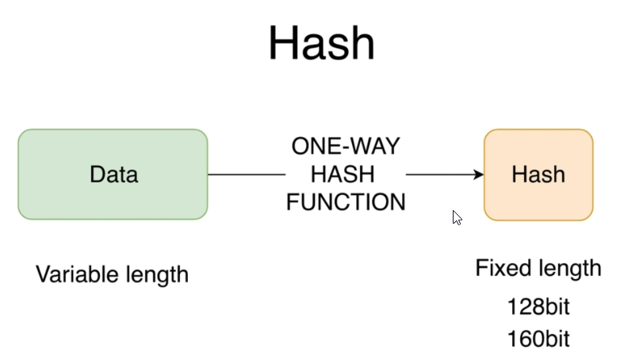
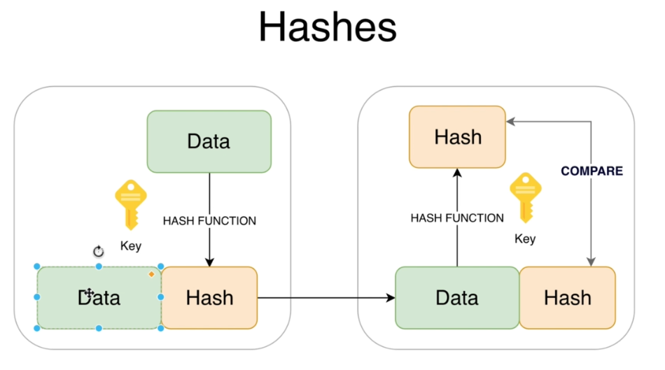
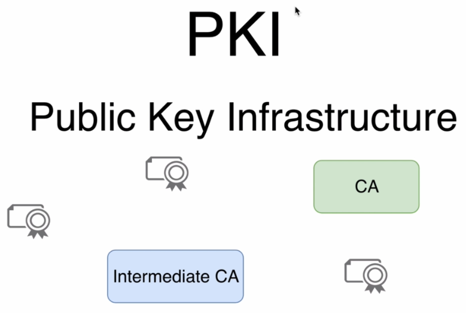
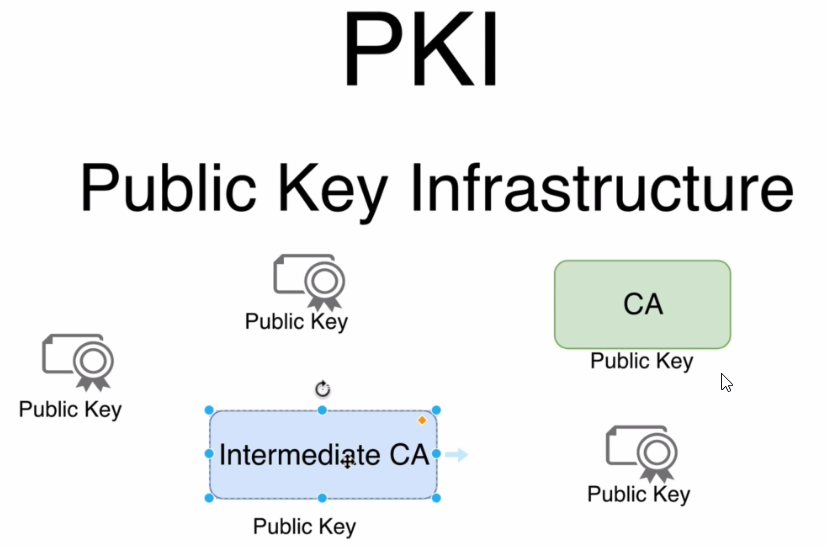
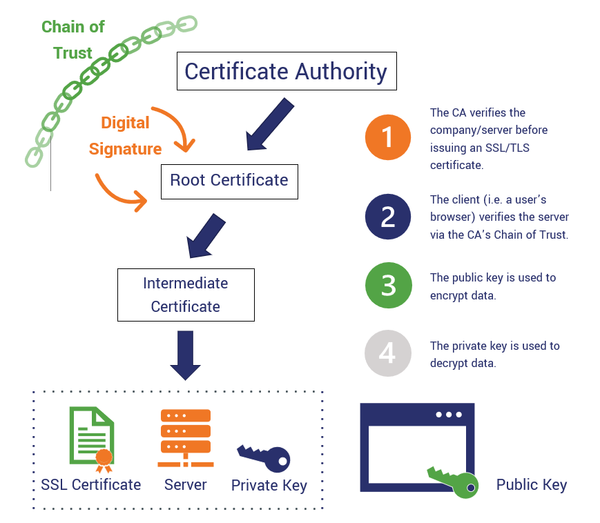
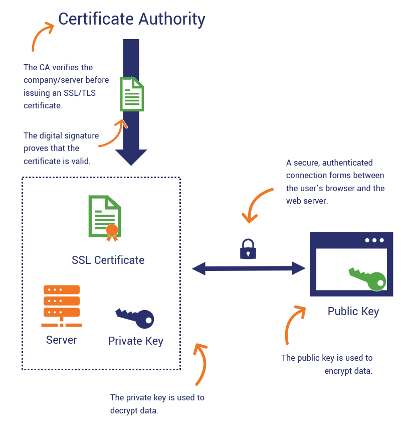
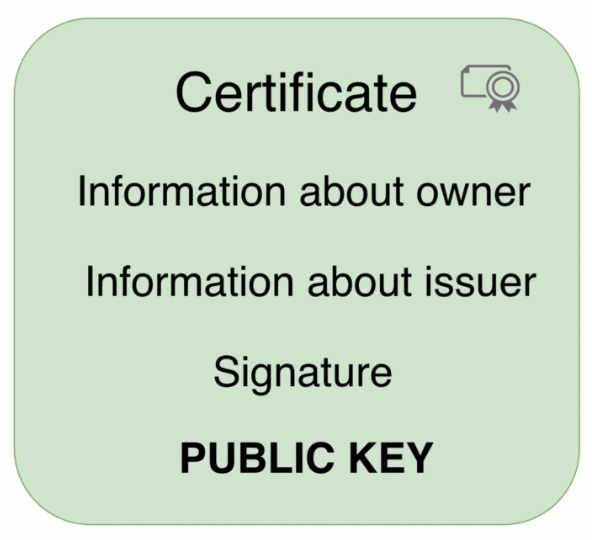

Symmetric Encryption

-->the keys are the same, so you should take care you don't transfer key to another people
---------------------------------------------------------

AES-->used more often key can be 128 bits or 256 bits, use more bits and more secure than DES and 3DES, and it is used in ssl communication
---------------------------------------------------------

-->Data that is encrypted during transfer over a network could be easily changed or compromised and that will lead to a situation that the receiver will not be able to read original data or will read it with some errors and that where hash come in
Hash-->it's fixed length and this length depends on the algorithm that is used for creation of the hash
How hash works??
-->data maybe word or sentence or a file and when hash function is applied it creates fixed lengths hash based on the input data and it creates an irreversible hash what is mean?? mean if you have hash and don't know what input data you are not able to retrieve data from the hash so that's why hash function is always one way
-->another important character is when you slightly change input data or even single character, hash will change completely
-->Hash don't require any key
-->there is also hash function that also add key into the hash process

-->after hashing original data, data along with hash sent over the network to receiver and receiver receives data and hash separately, and apply hash function to data and compare the generated hash with received hash and if those hashes matches it means for receiver that this data was not changed or mutated
The Purpose of hash-->it verifies integrity of data
-->when hash doesn't match receiver simply rejects data
Note: keys are optional and are used by some hash functions, but they are hash functions that utilize symmetric keys and with keys we perform not just integrity check on the receiver we also perform authentication
-->Keys in hash function add sender authentication
---------------------------------------------------------

-->Hash is often used for password storage for example: password that was entered by user somewhere in any application or website maybe stored not as a plain text password instead stored as hash and each time when user enters its password application creates hash again and compares two hashes
HMAC-->The main purpose of this algorithm is adding a special secret key into hash
HMAC: Data + Key = Hash
-->That mean in HMAC that the other side may read same hash only if it has same secret key
---------------------------------------------------------
Asymmetric key

-->Private key is always kept secret only in one place and public key is public and available for anyone
-->public key is used for encryption of data and only owner of the private key is able to decrypt an agreed data
-->The owner of this pair of keys creates hash using private key and anybody who has public key may verify signature
---------------------------------------------------------

---------------------------------------------------------
Sign and verify signature using asymmetric keys

-->when data sent from the owner, the data flow is opposite
---------------------------------------------------------
RSA
-->(Rivest-Shamir-Adleman) is a public-key cryptosystem that is widely used for secure data

-->Note that the key length is always the same for private and public keys when you generate key, two keys are generated not just one
-->When you feel that private key was compromised by someone else please regenerate keys and if you need a certificate based on keys you need to recreate certificate as well
---------------------------------------------------------
PKI-->public key infrastructure

PKI-->is set of different protocols,algorithms,entities,certificates that allows you to perform communication based on certificates
-->There are many different elements in the PKI infrastructure for example: CA-->Certification Authority and it's job to sign certificates or delegates trust to other entities and those entities are called intermediate CA and main responsibility for intermediate CA is signature of new certificates that are issued for all the entities for example for your website
-->you can use certificate to build VPN(viewable private network)
Certificate-->is a set of data, and most important information in any certificate is public key of the owner, it means that every entity in PKI infrastructure has its own public key



---------------------------------------------------------
Certificate-->simply a file with some data

Signature-->is Encrypted with Private Key Hash of Certificate
-->if certificate is signed by CA(certification authority) and we trust CA - we trust owner of the certificate too
Self-signed certificate->is issued and signed by the owner
-->Public key in certificate always belongs to the owner of certificate
-->The entire goal of certificate is to store public key which is always belongs to the owner not issuer
-->Private key must always be kept secret so of course it's not available in certificate